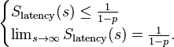

阿姆达尔定律（英语：Amdahl's law，Amdahl's argument），一个计算机科学界的经验法则，因吉恩·阿姆达尔(Gene Amdahl)而得名。它代表了处理器平行运算之后效率提升的能力。
1967年计算机体系结构专家吉恩.阿姆达尔提出过一个定律阿姆达尔定律，说：在并行计算中用多处理器的应用加速受限于程序所需的串行时间百分比。譬如说，你的程序50%是串行的，其他一半可以并行，那么，最大的加速比就是2。不管你用多少处理器并行，这个加速比不可能提高。在这种情况下，改进串行算法可能比多核处理器并行更有效。
公式
并行计算中的加速比是用并行前的执行速度和并行后的执行速度之比来表示的，它表示了在并行化之后的效率提升情况。
阿姆达尔定律是固定负载（计算总量不变时）时的量化标准。可用公式：$\frac{W_s + W_p}{W_s + \frac{W_p}{p}}$ 来表示。式中 $W_s$ , $W_p$ 分别表示问题规模的串行分量（问题中不能并行化的那一部分）和并行分量，p表示处理器数量。
只要注意到当 $p\to \infty$ 时，上式的极限是 $\frac{W}{W_s}$，其中，${W}={W_s}+{W_p}$。这意味着无论我们如何增大处理器数目，加速比是无法高于这个数的。
或者也可以用下面的公式表示:
$$
S_\text{latency}(s) = \frac{1}{1 - p + \frac{p}{s}}
$$
通用的：
- Slatency is the theoretical speedup in latency of the execution of the whole task;
- s is the speedup in latency of the execution of the part of the task that benefits from the improvement of the resources of the system;
- p is the percentage of the execution time of the whole task concerning the part that benefits from the improvement of the resources of the system before the improvement.
- 1-p is the percentage of the execution time of the whole task concerning the part that doesn't benefit from the improvement of the resources of the system before the improvement.
因此可以推断出:

如果我们针对并行计算，上面的公式代表：
- Slatency代表理论上的加速比
- s 为并行处理结点个数
- p 为并行计算部分所占比例
- 1-p 为串行计算部分所占比例
这样，当p=1时，最大加速比p=s；当p=0时，最小加速比S=1；当s→∞时，极限加速比S→ 1／(1-p)，这也就是加速比的上限。例如，若加速前并行代码执行时间占整个代码的执行时间的75％(p=0.75)，则加速后并行处理的总体性能的提升不可能超过原先的4倍。
Amdahl’s law表明在问题的可并行部分占比不大时，增加处理机的数量并不能显著地加快解决问题的时间。
阿姆达尔定律的结论让人沮丧，但到了20世纪80年代晚期，Sandia国家实验室的科学家们在对具有1024个处理器的超立方体结构上观察到了3个实际应用程序随着处理器的增加发生线性加速的现象，科学家John L. Gustafson基于此实验数据在1988年提出了一个新的计算加速系数的公式：
$$
S_\text{latency}(s) = 1 - p + sp
$$
其中，
- Slatency is the theoretical speedup in latency of the execution of the whole task;
- s is the speedup in latency of the execution of the part of the task that benefits from the improvement of the resources of the system;
- p is the percentage of the execution workload of the whole task concerning the part that benefits from the improvement of the resources of the system before the improvement.
Gustafson定律说明在许多实际的应用程序中得到接近线性的加速效果是可能的。
阿姆达尔定律的问题出在它的前提过于理想化。因为并行算法通常能处理比串行算法更大规模的问题，即使算法仍然存在着串行部分，但由于问题规模的不断扩大，往往会导致算法中串行部分所占比例的持续减少。